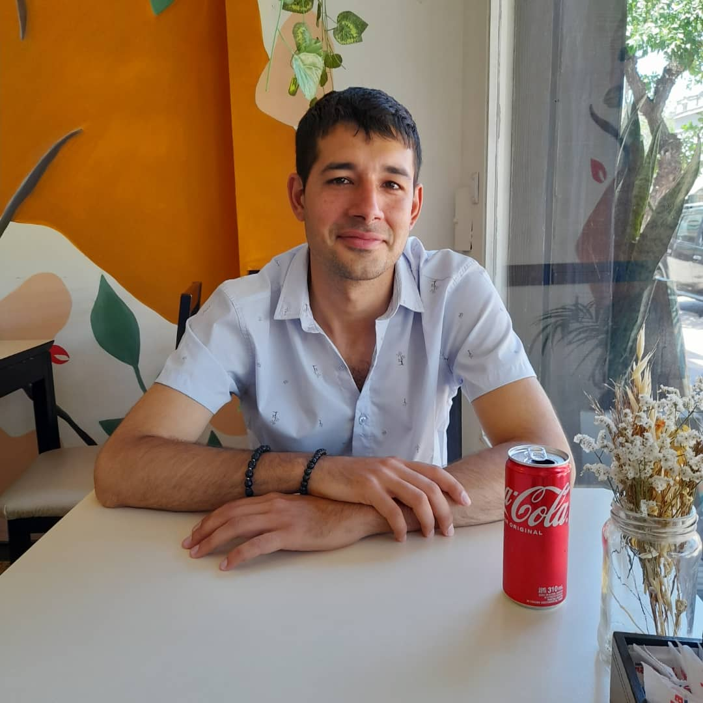

Nombre y apellido: Maximiliano Blas Silva.
Fecha de nacimiento: 15 de septiembre de 1990.
Domicilio: Guemes 1229, Pérez, Santa Fe, Argentina.
Mail: silvamaxiblas@gmail.com
Celular: 341 6 297919
EducaciónEstudios secundarios: terminados en la EEM. N° 225 "General Jose de San Martin"
Estudios terciarios: primer año de Contador Público Nacional en el "Instituto Universitario Aeronautico Argentino"
Experiencia laboralCroupier entre los años 2009 - 2012 en el casino "City Center"
Encargado de oficina de seguros entre los años 2015 - 2020 en la oficina "Pereyra Silva y Asiciados"
SkillsCuanto con grandes habilidades para la comunicación clara y concisa lo que a su vez sumado a la empatia me permite trabajar de manera eficiente en equipo. Además poseo muy buena prencencia y se desenvolverme educadamente.
Soy una persona con pasatiempos muy variados. Me gusta pasear, hacer ejercicio, leer, ver peliculas/series y jugar videojuegos.
Esta carrera tiene una suprema importancia en mi vida. Estudiar esta carera es el resultado de una larga busqueda por encontrar una actividad que me guste y que a su vez tenga dignas retribuciones dinerarias. Al finalizar la carrera espero encontrar rapidamente un trabajo donde pueda empezar mi camino como programador. Sumar experiencia mientras tengo un sueldo digno para con el tiempo formar parte de importantes y novedosos proyectos. Es mi sueño ser parte importante de un gran proyecto.